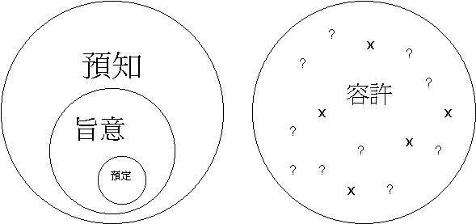

|
如何明白神的旨意 |
|||
|
定 義 |
方 法 |
實 例 |
榜 樣 |
「誰用無知的言語使我的旨意暗昧不明？」伯38:2
引言：
「我有神的感動，即時辭去工作，踏上讀神學的路，這是神的旨意！」
「感謝神，他雖然是未信的，但我深信神可以令他改變，他是神為我預備的。」
「究竟神的心意，要我讀文科或理科？」
「神的旨意一定會成就的！」
「若前面道路神攔阻，即証明不是心意，若神開路，道路通達，這即是神的旨意！」
「我對這事奉崗位沒有負擔，沒有感覺，應不是神的旨意！」
「究意今年受不受浸，要看神的旨意，暫時沒有感動！」
「她現在所作的是何等美好的屬靈工作，雖然方式有點怪，但竟然是好，又屬靈，應沒錯的，是神的旨意！」
〜何謂「神的旨意」呢？
如何尋找？ 如何明白？ 有甚麼原則？
神的旨意與「容許」「預定」「預知」「任憑」「美意」「負擔」「感動」有甚麼分別？
在事奉、工作、升學、感情等大決定上，如何尋求神的心意？以上問題，我們會用四堂時間探討。
一.
明白原因
1.父神的心願
「都是照他自己所預定的美意，叫我們知道他旨意的奧秘。」弗1:9
「因此，我們自從聽見的日子，也就為你們不住的禱告祈求，願你們在一切屬靈的智慧悟性上，滿心知道神的旨意。」西1:9
〜不單只保羅渴望信徒滿心知道(不是普通的知道)神的旨意，神也藉諸般方法，想人明白，得知祂旨意的奧秘。
2.聖經的吩咐
「要照所安排的，在日期滿足的時候，使天上、地上、一切所有的都在基督裡面同歸於一。」弗5:10
3.時候的夠了
「你們存這樣的心，從今以後就可以不從人的情慾，只從神的旨意在世度餘下的光陰。因為往日隨從外邦人的心意行邪淫、惡慾、醉酒、荒宴、群飲，並可惡拜偶像的事，時候已經夠了。」彼前4:2-3
4.不作糊塗人
「不要作糊塗人，要明白主的旨意如何。」弗5:17
〜糊塗人不明白神旨意，也虛度很多光陰，也行了許多神不喜悅的事。
5.能分別是非
「既從律法中受了教訓，就曉得神的旨意，也能分別是非（或作：也喜愛那美好的事）。」
羅2:18
6.行事蒙主悅
「因此，我們自從聽見的日子，也就為你們不住的禱告祈求，願你們在一切屬靈的智慧悟性上，滿心知道神的旨意；好叫你們行事為人對得起主，凡事蒙他喜悅，在一切善事上結果子，漸漸的多知道神；」西1:9-10
7.生命更完全
「好叫你們行事為人對得起主，凡事蒙他喜悅，在一切善事上結果子，漸漸的多知道神；照他榮耀的權能，得以在各樣的力上加力，好叫你們凡事歡歡喜喜的忍耐寬容；」西1:10-11
「有你們那裡的人，作基督耶穌僕人的以巴弗問你們安。他在禱告之間，常為你們竭力的祈求，願你們在神一切的旨意上得以完全，信心充足，能站立得穩。」西4:12
〜當信徒滿心知道祂的旨意，並樂意遵行，他的生命會更完全：
A.行為更完全
→ 能多結善果
B.靈�塈騥i深
→ 漸漸多知道神
C.內心更豐盛
→ 凡事歡喜，力上加力
8.祈禱可成就
「我們若照他的旨意求什麼，他就聽我們，這是我們向他所存坦然無懼的心。」約壹5:14
9.終得神應許
「你們必須忍耐，使你們行完了神的旨意，就可以得著所應許的。」來10:36
二.旨意定義
「又因愛我們，就按著自己意旨所喜悅的，預定我們藉著耶穌基督得兒子的名分。」弗1:5
「在各樣善事上成全你們，叫你們遵行他的旨意；又藉著耶穌基督在你們心裡行他所喜悅的事。願榮耀歸給他，直到永永遠遠。阿們！」來13:21
「我們從前也都在他們中間，放縱肉體的私慾，隨著肉體和心中所喜好的去行，本為可怒之子，和別人一樣。」弗2:3
〜神的「旨意」------希臘文是
{thel’_ay-mah}意思神所希望達成的事，神的心意，神的“will”,神所喜悅的事
〜弗2:3肉體和心中「所喜好的」的和神的「旨意」是同一個字(希臘文)
〜而很多處聖經將神旨意與神所喜悅的放在一齊
〜所以神的旨意就是神所喜悅的事，神的心意了，是從神來，是神歡喜的
〜而神所喜悅的是否一定成就(預定)？
神容許一些事是否一定是神所喜悅的？
神的旨意有甚麼特質呢？
三.旨意分析
1.從共通性而看
「不要效法這個世界，只要心意更新而變化，叫你們察驗何為神的善良、純全、可喜悅的旨意。」羅12:2
「父啊，是的，因為你的美意本是如此。」太11:26
〜神的旨意必共有3個元素及特質
A.有神的善良
(good)
B.有純全
(perfect)
C.有神的悅納
(acceptable)
〜若一個人說：「神的旨意是要我與這位朋友結婚，雖然她未信，但日後神一定令她信主」明顯是違反神的純全，要求不能與未信成為一體的原則。
〜神的旨意一定是善良，不會叫我們犯罪或違作反祂的屬性事情。
〜神的意思一定是perfect，我們現在可能覺不好，但至終必是美的！最好的！
2.從是非性而看
「神的旨意就是要你們成為聖潔，遠避淫行。」帖前4:3
「奉神旨意，作基督耶穌使徒的保羅，寫信給在以弗所的聖徒，就是在基督耶穌裡有忠心的人。」弗1:1
〜神的旨意很多時候與是非有關，例如要我們聖潔(是)，逃避淫行(非)，關乎可以與不可以作一些善與惡的事。
〜但有時，神的旨意未必提常及是與非，例如選保羅作使徒，不是罪與正的事情，而是事奉，揀選的美意。
3.從主權性而看
「又因愛我們，就按著自己意旨所喜悅的，預定我們藉著耶穌基督得兒子的名分。」弗1:5
「我們也在他裡面得（得：或作成）了基業；這原是那位隨己意行、做萬事的，照著他旨意所預定的。」弗1:11
「如此看來，神要憐憫誰就憐憫誰，要叫誰剛硬就叫誰剛硬。」羅9:18
「你們只當說：「主若願意，我們就可以活著，也可以做這事，或做那事。」」雅4:15
〜「旨意」「喜悅」「願意」「要」都有「will」意思，在希臘文中同一字根，都表明神在祂旨意中的主權性，是神自己的意思，祂有權願意這人如何，那人如何，最終決定權是在神手中。
4.從奧秘性而看
「誰用無知的言語使你的旨意隱藏呢？我所說的是我不明白的；這些事太奇妙，是我不知道的。」伯42:3
「深哉，神豐富的智慧和知識！他的判斷何其難測！他的蹤跡何其難尋！誰知道主的心？誰作過他的謀士呢？」羅11:33-34
「都是照他自己所預定的美意，叫我們知道他旨意的奧秘。」弗1:9
〜神的意旨通常藉聖經，可以使人明白，祂也想人明白，但有時候，一些旨意可能太奇妙、奧妙，即使如約伯，保羅等有智慧人，也未必可以揣測到，人只當順服，更信雖不明白，仍是perfect美的！
5.從預定性而看
「我知道，你萬事都能做；你的旨意不能攔阻。」伯42:2
「這是向全地所定的旨意；這是向萬國所伸出的手。」賽14:26
「成就你手和你意旨所預定必有的事。」徒4:28
「又因愛我們，就按著自己意旨所喜悅的，預定我們藉著耶穌基督得兒子的名分。」弗1:5
〜在神的意旨中，有分預定性及非預定性，例如祂預定我們藉主得兒子的名份，這是祂的心意，祂原定了，沒有人可以攔阻！一定會成就的！
〜但神的心意不是全部預定會成就的，例如祂的心意是叫人不犯罪，但不是預定人不犯罪人，人始終犯了罪，不是祂的心意，祂是預知，但不是預定(不是神成就的)，也不是祂喜悅見到的事。
〜而有一些事則是神預定性的旨意，例如：
A.預定主生平
「主也必差遣所預定給你們的基督（耶穌）降臨。」徒3:20
「人子固然要照所預定的去世，但賣人子的人有禍了！」路22:22
B.預定得永生
「外邦人聽見這話，就歡喜了，讚美神的道；凡預定得永生的人都信了。」徒13:48
C.預定得榮耀
「我們講的，乃是從前所隱藏、神奧秘的智慧，就是神在萬世以前預定使我們得榮耀的。」林前2:7
6.從對象性而看
「第二次又去禱告說：「我父啊，這杯若不能離開我，必要我喝，就願你的意旨成全。」」太26:42
「奉神旨意，作基督耶穌使徒的保羅和兄弟提摩太」西1:1
「因為神的旨意原是要你們行善，可以堵住那糊塗無知人的口。」彼前2:15
「他願意萬人得救，明白真道。」提前2:4
〜神的旨意有時是向個別人說，例如主要上十架路，保羅作使徒，是神向個別人的旨意。
〜但通常神旨意是向整體信徒說，例如要我們聖潔，要我們行善，要我們去傳福音。
7.從容許性來看
「因此，神任憑他們放縱可羞恥的情慾。他們的女人把順性的用處變為逆性的用處；」羅1:26
「人被試探，不可說：「我是被神試探」；因為神不能被惡試探，他也不試探人。」雅1:13
「我們曉得萬事都互相效力，叫愛神的人得益處，就是按他旨意被召的人。因為他預先所知道的人，就預先定下效法他兒子的模樣，使他兒子在許多弟兄中作長子。預先所定下的人又召他們來；所召來的人又稱他們為義；所稱為義的人又叫他們得榮耀。」羅8:28-30
「事情的終局強如事情的起頭；存心忍耐的，勝過居心驕傲的。」傳7:8
〜神更有時容許一些非祂所喜悅的心意之事發生，例如容許魔鬼試探人，任憑人犯罪，不代表祂喜愛的。
〜但若更闊來說，也可以說是祂的心意(似乎是矛盾?)，因祂終極的目標是good、perfect、acceptable，祂最終想人完全，屬祂的人得榮耀，所以祂容許一些事發生，令萬事互相效力，叫人在罪中知罪，叫人知道己自能力有限，要倚靠神，叫人學習信心、順服、持守、令人完全，當然單從一點(個別時刻來說)，人犯罪不是神旨意，但從整體來看，人犯罪帶來知罪及走向救恩；是神的美意。
〜但人不可濫用神終極的旨意，因為人若故意犯罪，明顯不是神的 ”will”，最終帶來的公義旨意是管教。
一般定義 終極旨意
